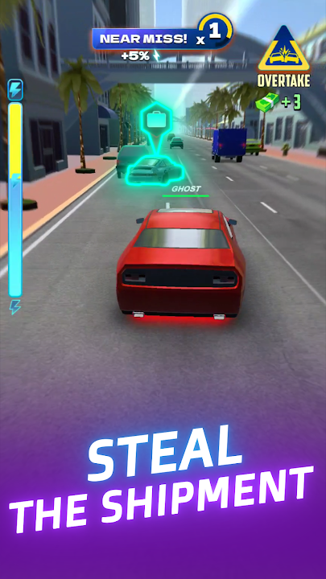
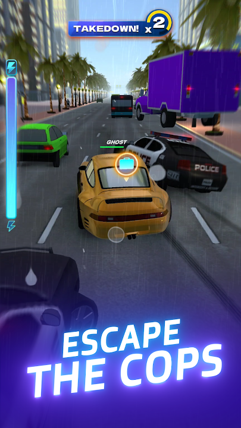

About the Game
High-speed 3D mobile traffic racing game developed at Utin Computers. Players weave through dense highway traffic, dodge roadblocks, outrun rivals, and trigger nitro boosts in an arcade-action urban setting.



High-speed 3D mobile traffic racing game developed at Utin Computers. Players weave through dense highway traffic, dodge roadblocks, outrun rivals, and trigger nitro boosts in an arcade-action urban setting.
Contributed across core 3D gameplay systems: vehicle handling and physics tuning, high-speed motion blur & rendering effects, New Input System integration, mission/level flow, UI screens, and gameplay feature implementation.